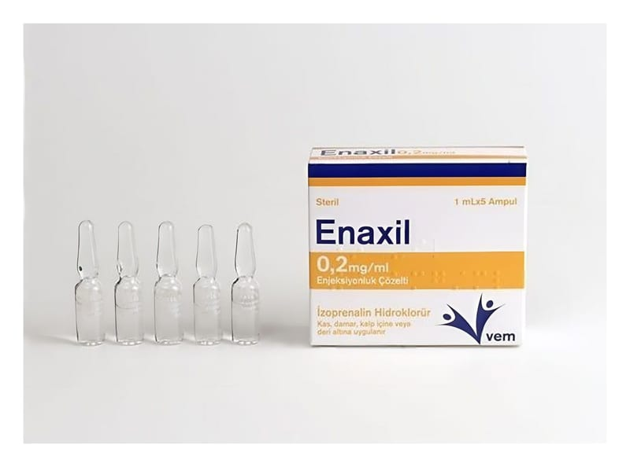

Enaxil 0,2 mg/ml Enjeksiyonluk Çözelti, 5 Adet

Ne için kullanılır
KT · Bölüm 1ENAXİL her bir ampulde izoprenalin olarak isimlendirilen bir ilaç etkin maddesini içerir. İzoprenalin “Adrenerjik ve dopaminerjik ilaçlar” olarak bilinen ve güçlü semnpatomimetik aminler grubuna ait bir ilaçtır. Belirgin vazodilatatör (damar genişletici) ve bronkodilatör (bronşları genişletici) etkisi vardır. ENAXİL vücudunuzdaki kalp pompalarınızın verimliliğini artırmaya yardımcı olur, kalp kaslarınızı güçlendirerek ve kalp atış hızınızı arttırarak etki gösterir.
ENAXİL; Elektrik şok veya kalp pili tedavisini gerektirmeyen hafif veya geçici kalp bloğu ataklarında, Ciddi kalp bloğu vakalarında ve Adams-Stokes (yavaş nabız veya nabzın alınamaması) ataklarında (ventriküler taşikardi (kalbin dakikadaki atım sayısının artması) veya fibrilasyonun sebep olduğu durumlar hariç), Önerilen elektrik şok veya kalp pili tedavileri hazır olana kadar kardiyak arrestte (kalp durması) kullanım için, Anestezi sırasında ortaya çıkan bronkospazmda (hava yolunun geçici daralması), Sıvı ve elektrolit replasmanı tedavisine bir yardımcı ve hipovolemik (kan hacmindeki bir azalmaya bağlı olarak ortaya çıkan şok) ve septik şok (travma veya cerrahi girişimlerden kaynaklı şok) tedavisi, düşük kalp debisi (hipoperfüzyon) durumlarında, konjestif kalp yetmezliğinde ve kardiyojenik şok durumlarının tedavisinde diğer ilaçların ve prosedürlerin kullanımında yardımcı olarak kullanılır. ENAXİL, 1 mL kapasiteli 5 adet renksiz Tip I cam ampul içerisinde pazarlanmaktadır.